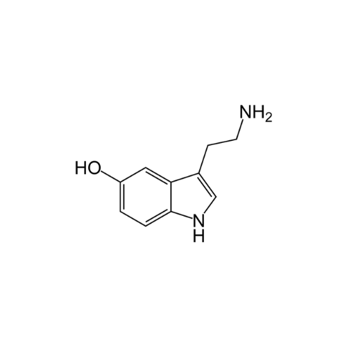

SYNAPSE
Você provavelmente já ouviu e leu diversas vezes que o nosso corpo é como uma máquina, o que não deixa de ser verdade, mas você já chegou a se questionar qual seria o processador central desse grande sistema? Caso não, aqui está a resposta: é o nosso cérebro!
Funcionalidade do Cérebro
- O cérebro recebe informações de todos os lugares: olhos, nariz, ouvidos e os demais órgãos. Ele processa todas essas informações e transforma em pensamentos, ideias ou mensagens para o nosso corpo. O encéfalo diz aos nossos músculos para se moverem, para que diversas atividades possam ser realizadas e controla coisas que fazemos no “automático”, como respirar ou fazer o coração bombear o sangue.
- Precisamos dele para todas as nossas funções básicas: mover, falar, ouvir, ver, cheirar, degustar. E para que isso aconteça o órgão carece de uma grande quantidade de sangue e oxigênio. Cerca de 20% do sangue bombeado a cada momento vai para o cérebro, e se esse fluxo de sangue for interrompido por dez segundos ou mais, a pessoa desmaia.
Estrutura do Cérebro
A atividade do cérebro deve-se aos impulsos elétricos gerados pelos neurônios, que processam e armazenam a informação. Esses impulsos percorrem o cérebro através das fibras nervosas. A quantidade, o tipo e a origem da atividade dependem do nível de consciência da pessoa e da atividade específica que está sendo realizada.
O cérebro apresenta três partes principais, cada parte tem várias áreas menores, cada uma com funções específicas.
- Telencéfalo
- Troco Cerebral
- Cerebelo
Neurotransmissores
Um neurotransmissor é um mensageiro químico sintetizado nos neurônios e armazenado em vesículas sinápticas. Quando o impulso nervoso chega ao terminal axônico, essas moléculas são liberadas por exocitose e caem na fenda sináptica, que é o espaço entre a membrana pré-sináptica (membrana que libera os neurotransmissores) e a membrana pós-sináptica (membrana da célula vizinha). Os neurotransmissores interagem com os receptores específicos da membrana pós-sináptica, garantindo que a informação seja transmitida para a célula receptora.
Uma parte dos neurotransmissores pode ser recaptada pelo neurônio responsável pela sua síntese ou ser armazenada novamente nas vesículas desse mesmo neurônio. A liberação dos neurotransmissores, bem como sua captura por receptores específicos, assegura a transmissão do impulso nervoso de forma eficiente. Os neurotransmissores podem ser classificados em dois tipos principais: aqueles que promovem respostas excitatórias e aqueles que geram respostas inibitórias.
-
Excitatórios
Esses neurotransmissores provocam a despolarização da membrana pós-sináptica.
-
Inibitórios
Esses neurotransmissores promovem a hiperpolarização da membrana pós-sináptica.
Todos os Neurotransmissores

Acetilcolina
- A Acetilcolina (ACH) é produzida pelo sistema nervoso (central e periférico).
- Foi o primeiro neurotransmissor a ser descoberto em 1914 pelo fisiologista inglês Henry Hallett Dale (1875-1968).
- Há dois tipos de receptores: muscarínico e nicotínico.
- Suas principais funções são: vasodilatação, redução da frequência cardíaca, aumento de secreções, relaxamento intestinal, contração de músculos, auxílio na cognição.
- A ingestão de alimentos ricos em acetilcolina pode prevenir doenças degenerativas, como o Alzheimer.

Adrenalina
- A adrenalina, ou epinefrina, é produzida e liberada pela medula adrenal quando o sistema nervoso simpático é estimulado.
- Promove, dentre outras ações, aumento do ritmo cardíaco, degradação do glicogênio e degradação da gordura.
- Por atuar em momentos de estresse é considerada um hormônio de “luta ou fuga”.
- Tem aplicação na medicina, sendo usada em casos de parada cardíaca, anafilaxia e asma brônquica.
Dopamina
- A dopamina é conhecida como um dos hormônios da felicidade e quando liberada provoca a sensação de prazer, satisfação e aumenta a motivação.
- Atua nos processos cognitivos, aumentando os níveis de memória e atenção, auxiliando no controle dos movimentos, promovendo a saúde do intestino e contribuindo para o aumento da massa muscular.
- É utilizada em tratamentos de distúrbios neurológicos e psiquiátricos, como doença de Parkinson, esquizofrenia ou TDAH.
- Produzida de forma endógena pelo nosso organismo, em um processo de duas etapas. A tirosina é convertida em outro aminoácido, chamado L-dopa. Então, a L-dopa sofre outra mudança e é transformada em dopamina pelas enzimas do nosso corpo.

Endorfina
- É uma substância natural, produzida pela glândula hipófise, presente no cérebro.
- Ela inibe a irritação e o estresse.
- Tem diversas funções como: maior relaxamento, melhoria da memória, ajuda no bom humor, anti envelhecimento, aumento da resistência física e mental, maior concentração, combate à depressão e ansiedade, regulação do sono, aumento da queima de calorias, maior facilidade de perda de peso, melhor funcionamento do intestino e da pressão sanguínea, redução do colesterol.
Gaba
- O ácido gama-aminobutírico é o principal inibitório do sistema nervoso central. Isso quer dizer que ele é responsável por desacelerar a atividade cerebral.
- Produzido e liberado por neurônios chamados gabaérgicos, e se liga a receptores em outros neurônios.
- O GABA melhora a qualidade do sono, diminui a insônia, tem efeito antidepressivo, diminui a ansiedade, da sensação de tranquilidade e relaxamento e melhora a memória de longo prazo.

Glutamato
- O glutamato é o excitatório mais abundante. Ou seja, ele estimula uma célula nervosa, fazendo que a mensagem química continue a se mover de célula nervosa para célula nervosa sem ser interrompida.
- É essencial para o bom funcionamento do cérebro.
- Produzido pelas células gliais do cérebro.
- Atua na aprendizagem e memória, como fonte de energia para as células cerebrais, mensageiro químico, gerenciador do ciclo sono-vigília e sinalizador de dor.
Noradrenalina
- A noradrenalina é também chamada de norepinefrina e foi identificada em meados dos anos 60.
- Ela é um precursor endógeno da adrenalina.
- É produzida na medula suprarrenal(atua como hormônio) e também no sistema nervoso(atua como neurotransmissor que excita o sistema nervoso autônomo).
- Relacionada com a capacidade de ficar em alerta, de ter uma boa memória, de aumentar a força de contração do coração e de provocar aumento da pressão arterial.
Ocitocina
- A ocitocina é produzida no hipotálamo e liberada na corrente sanguínea pela glândula pituitária.
- É chamada de "hormônio do amor" ou "droga do amor". Uma das razões é sua principal função ser facilitar o parto e liberarmos ela quando excitados ou quando nos apaixonamos.
- Os receptores de ocitocina são expressos por neurônios em diversas partes do cérebro e medula espinhal, e ainda nas amígdalas cerebelares, no núcleo ventromedial, septo, núcleo accumbens e tronco cerebral.

Serotonina
- A serotonina é sintetizada a partir do aminoácido triptofano.
- Ela influencia funções essenciais como humor, sono, apetite, ritmo cardíaco, temperatura corporal, memória, regulação do humor, saúde intestinal, funções cognitivas, saúde cardiovascular e libído.
- Também é conhecida como “hormônio da felicidade”.
- Quase 90% da serotonina no corpo está no trato gastrointestinal, onde regula o processo digestivo e o fluxo sanguíneo.